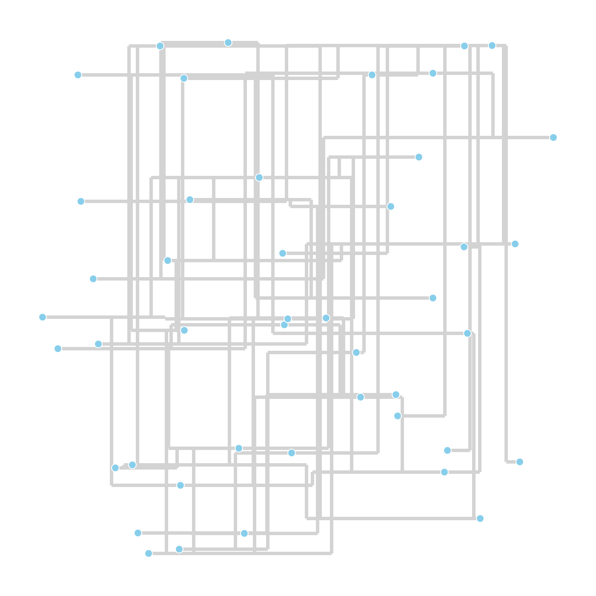

sciBASIC#
↖
sciBASIC#
↖
04 Tutorial — Orthogonal layout
Wire a synthetic network into a clean orthogonal schematic with the HOLA layout engine.
Layout algorithms are easiest to trust on a graph you can count. This demo builds a deliberately tangled test network — a 5 × 4 mesh, a 12-node chain anchored across it, a seven-leaf star and an isolated five-ring — scatters all vertices at fixed-seed random positions, and hands the mess to the HOLA orthogonal layout engine. The result is rendered through NetworkVisualizer with edge bends enabled, straight into a 1400 × 1400 PNG.
02 Pipeline
A tangled graph, then a clean schematic
Build
A 5 × 4 mesh, a 12-node chain, a 7-leaf star and a 5-node ring are assembled on
NetworkGraph with AddNode / AddEdge.
Tangle
Cross-links between mesh corners and row spans are added on purpose, and every vertex starts at a
random position (Random(12345)) so the layout has real work to do.
Layout
HOLA.DoLayout(g) iterates the human-like orthogonal algorithm: remove edge crossings,
align parallel segments and fold the remaining overlaps.
Render
NetworkVisualizer.DrawImage draws a 1400 × 1400 canvas with
drawEdgeBends:=True — every orthogonal bend point becomes visible polyline geometry.
Report
The script counts nodes, edges and bend-carrying edges from the laid-out graph and echoes them to the console before saving the PNG.
01 The Script
Full demo source
The complete script exactly as executed by the sciBASIC# script engine (vbs.exe) — nothing elided.
#include "Microsoft.VisualBasic.Data.visualize.Network.Visualizer.dll"
#include "Microsoft.VisualBasic.Data.visualize.Network.Layouts.dll"
#include "Microsoft.VisualBasic.Data.visualize.Network.dll"
#include "Microsoft.VisualBasic.Drawing.dll"
#include "Microsoft.VisualBasic.Data.GraphTheory.dll"
#include "Microsoft.VisualBasic.Imaging.dll"
imports microsoft.visualbasic.drawing
Imports Microsoft.VisualBasic.Data.visualize.Network
Imports Microsoft.VisualBasic.Data.visualize.Network.Graph
Imports Microsoft.VisualBasic.Data.visualize.Network.Layouts
Imports Microsoft.VisualBasic.Data.visualize.Network.Layouts.Orthogonal
Imports Microsoft.VisualBasic.Data.visualize.Network.Layouts.Hola
Imports inode = Microsoft.VisualBasic.Data.visualize.Network.Graph.Node
Dim g As New NetworkGraph
Dim rnd As New Random(12345)
' 用固定种子的随机散点作为 HOLA 起点，凸显去交叉/对齐/去重叠效果
public function rndPos() as FDGVector2
return New FDGVector2(rnd.NextDouble() * 1000.0, rnd.NextDouble() * 1000.0)
End function
public sub addNode(label As String)
Call g.AddNode(New inode With {
.label = label,
.data = New NodeData With {
.initialPostion = rndPos(),
.size = {18, 18}
}
})
End Sub
' === 1) 网格块 5 x 4 = 20 节点 ===
Dim rows = 5, cols = 4
Dim grid(rows - 1, cols - 1) As String
Dim nodeId = 0
For r As Integer = 0 To rows - 1
For c As Integer = 0 To cols - 1
Dim id = "n" & nodeId
grid(r, c) = id
addNode(id)
nodeId += 1
Next
Next
' 行列相邻边
For r As Integer = 0 To rows - 1
For c As Integer = 0 To cols - 1
If c + 1 < cols Then Call g.AddEdge(grid(r, c), grid(r, c + 1))
If r + 1 < rows Then Call g.AddEdge(grid(r, c), grid(r + 1, c))
Next
Next
' 跨行/跨列边，刻意制造交叉
Call g.AddEdge(grid(0, 0), grid(4, 3))
Call g.AddEdge(grid(0, 3), grid(4, 0))
Call g.AddEdge(grid(1, 1), grid(3, 2))
Call g.AddEdge(grid(2, 0), grid(2, 3))
' === 2) 链式结构 12 节点，两端接到网格块形成长边交叉 ===
Dim chain(11) As String
For i As Integer = 0 To 11
chain(i) = "c" & i
addNode(chain(i))
Next
For i As Integer = 0 To 10
Call g.AddEdge(chain(i), chain(i + 1))
Next
' 链两端接到网格块对角，制造跨图长边
Call g.AddEdge(chain(0), grid(0, 0))
Call g.AddEdge(chain(11), grid(4, 3))
' === 3) 星型结构 1 hub + 7 leaf，hub 连到网格块 ===
Dim hub = "hub"
Call addNode(hub)
Call g.AddEdge(hub, grid(2, 1)) ' hub 挂到网格块中心
For i As Integer = 0 To 6
Dim leaf = "leaf" & i
Call addNode(leaf)
Call g.AddEdge(hub, leaf)
Next
' === 4) 独立小连通分量 5 节点环，验证多分量不被误连 ===
Dim ring = {"r0", "r1", "r2", "r3", "r4"}
For Each rn In ring
Call addNode(rn)
Next
For i As Integer = 0 To ring.Length - 1
Call g.AddEdge(ring(i), ring((i + 1) Mod ring.Length))
Next
' === 执行 HOLA 布局 ===
Call HOLA.DoLayout(g)
' 统计节点/边/生成 bends 的边数
Dim nodeCount = 0
For Each n As inode In g.connectedNodes
nodeCount += 1
Next
Dim totalEdges = 0, bendCount = 0
For Each e As Edge In g.graphEdges
totalEdges += 1
If e.data.bends IsNot Nothing AndAlso e.data.bends.Length > 0 Then
bendCount += 1
End If
Next
console.WriteLine($"=== HOLA complex network: {nodeCount} nodes, {totalEdges} edges, {bendCount} edges with bends ===")
' 渲染为 PNG（放大画布以容纳更多节点；启用 drawEdgeBends 显示正交折点）
Call SkiaDriver.Register()
Call NetworkVisualizer.DrawImage(g, "1400,1400",
displayId:=False,
drawEdgeBends:=True,
labelerIterations:=-1,
minLinkWidth:=8) _
.Save("Z:/HOLA_complex_layout.png")
console.WriteLine("[HOLA] complex test done. see ./HOLA_complex_layout.png")03 Results
The orthogonal schematic

{kind=link}